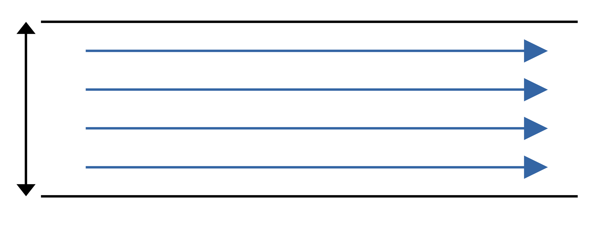

What the Schmidt?
Just the Facts
DOFPro Team

This video gives examples of three topics
• Dimensionless numbers or dimensionless groups
• Dimensional homogeneity
• Arguments of transcendental functions are dimensionless.
Dimensionless Numbers
Most famous is Reynolds number, \(Re\).
\(Re = \frac{\rho u D}{\mu} = \frac{u D}{\nu}\)
\(\mathrm{momentum} \propto \rho u\),
\(\mathrm{viscous\ force} \propto \mu/D\)
\(Re\) is ratio of momentum to viscous drag.
For a pipe, the transition from viscous flow to inertial flow occurs between \(Re = 2000\) and \(Re = 3000\).
Reynolds Number Example

\(D = 3\ \mathrm{in}\)
\(u = 10\ \mathrm{ft/s}\)
\(\rho = 62.4\ \mathrm{lb_m/ft^3}\)
\(\mu = 2.5791 \times 10^{-5}\ \frac{\mathrm{lb_f \cdot s}}{\mathrm{ft^2}}\)
American Engineering
\(Re = \frac{\rho u D}{\mu} = \frac{62.4\ \frac{\mathrm{lb_m}}{\mathrm{ft^3}}\cdot 10\ \frac{\mathrm{ft}}{\mathrm{s}}\cdot \frac{3}{12}\ \mathrm{ft}}{2.5791 \times 10^{-5}\ \frac{\mathrm{lb_f\ s}}{\mathrm{m^2}}} = 6.049 \times 10^6\ \frac{\mathrm{lb_m\ ft}}{\mathrm{lb_f\ s^2}}\)
\(1 = \frac{1\ \mathrm{lb_f\ s^2}}{32.174\ \mathrm{lb_m\ ft}}\)
\(Re = 6.049 \times 10^6\ \frac{\mathrm{lb_m\ ft}}{\mathrm{lb_f\ s^2}} \cdot \frac{1\ \mathrm{lb_f\ s^2}}{32.174\ \mathrm{lb_m\ ft}} = 1.880 \times 10^5\)
In SI
\(D = 76.3\ \mathrm{mm}\)
\(u = 3.048\ \mathrm{ft/s}\)
\(\rho = 999.55\ \mathrm{kg/m^3}\)
\(\mu = 1.2349 \times 10^{-3}\ \frac{\mathrm{N \cdot s}}{\mathrm{m^2}}\)
\(Re = \frac{\rho u D}{\mu} = \frac{999.55\ \frac{\mathrm{kg}}{\mathrm{m^3}}\cdot 3.048\ \frac{\mathrm{m}}{\mathrm{s}}\cdot \frac{76.3}{1000}\ \mathrm{m}}{1.2349 \times 10^{-3}\ \frac{\mathrm{N\ s}}{\mathrm{m^2}}} = 1.880 \times 10^5\ \frac{\mathrm{kg\ m}}{\mathrm{N\ s^2}}\)
\(1 = \frac{1\ \mathrm{N\ s^2}}{\mathrm{kg\ m}}\)
\(Re = 1.880 \times 10^5\ \frac{\mathrm{kg\ m}}{\mathrm{N\ s^2}} \cdot \frac{1\ \mathrm{N\ s^2}}{\mathrm{kg\ m}} = 1.880 \times 10^5\)
Table of Dimensionless Numbers
Nusselt Number: \(Nu=\frac{h l}{k}\)
• Ratio of convective to conductive heat transfer
Prandtl Number: \(Pr = \frac{\nu}{\alpha}= \frac{C_P \mu}{k}\)
• Ratio of viscous to thermal diffusion
Fourier Number: \(Fo = \frac{\alpha t}{l^2}\)
• Ratio of diffusive to storage rates
Sherwood Number: \(Sh = \frac{k l}{\mathscr{D}}\)
• Ratio of convective to diffusive mass transport
Schmidt Number: \(Sc = \frac{\nu}{\mathscr{D}} = \frac{\mu}{\rho \mathscr{D}}\)
• Ratio of viscous to mass diffusion
Dimensional Homogeneity
As explained in Where Does Sherwood Hide His Unit?, all terms in an equation must be dimensionally homogeneous.
First Example – The integrated rocket equation
\(\Delta v = I_\mathrm{sp} g_0 \ln \frac{m_0}{m_f}\)
As the argument to \(\ln\), \(m_0/m_f\) must be unitless, so \(m_0\) and \(m_f\) must have the same units, in this case, mass.
\(I_\mathrm{sp} g_0\) must have the same units as \(v\), or in SI, \(\mathrm{m/s}\).
\(g_0\) (or \(g\)) has units of \(\mathrm{m/s^2}\) So \(I_\mathrm{sp}\) has units of seconds.
Double check
\(I_\mathrm{sp} = \frac{I_\mathrm{total}}{w_\mathrm{fuel}}\)
\(I_\mathrm{total}\) has units of \(\mathrm{N\ s}\), and \(w_\mathrm{fuel}\) has units of \({\mathrm{N}}\).
So, \(I_\mathrm{sp}\) has units of seconds, same as before.
Second Example –
The rocket equation for gravity and constant \(C_D\).
\(a = \frac{T}{m}-g-\frac{1}{2}C_D A_P \frac{\rho}{m}v^2\)
\(a\) is in \(\mathrm{m/s^2}\)
\(T/m\) must be in \(\mathrm{m/s^2}\). Since \(m\) is in \(\mathrm{kg}\), \(T\) must be in \(\mathrm{kg\ m/s^2}\) or \(\mathrm{N}\), which it is.
\(g\) is in \(\mathrm{m/s^2}\), as it must be.
\(\rho/m\) is in \(\mathrm{m^{-3}}\). \(A_P\) is in \(\mathrm{m^2}\). \(v^2\) is in \(\mathrm{m^2/s^2}\).
So \(A_P \frac{\rho}{m}v^2\) is in units of \(\mathrm{m^2/s^2}\) and \(C_D\) is dimensioness.
Transcendental Functions
Equation of the rocket altitude for constant thrust and constant \(C_D\).
\(x-x_0= \frac{v^2_{\text{max}}}{b}\left\{\ln{\left[\cosh{\left(\frac{b}{v_{\text{max}}}(t-t_0)+\tanh^{-1}{\frac{v_0}{v_{\text{max}}}}\right)}\right]}\right.\)
\(\left.- \ln{\left[\cosh{\left(\tanh^{-1}{\frac{v_0}{v_{\text{max}}}}\right)}\right]}\right\}\)
\(v_0/v_\mathrm{max}\) is dimensionless, as it must be.
\(\tanh^{-1}\) is dimensionless.
\(\cosh\) is dimensionless.
\(\frac{b}{v_{\text{max}}}(t-t_0)\) must be dimensionless.
\(v_{\text{max}}\) is in \(\mathrm{m/s}\). \(t\) and \(t_0\) are in seconds.
So \(b\) must have dimensions of \(\mathrm{m/s^2}\)
So \(v^2_{\mathrm{max}}/b\) has dimensions of \(\mathrm{m}\) like \(x\) and \(x_0\).
The Takeaways
- There are ways to combine variables or measured quantities to create dimensionless numbers, which help reduce the measurements you need to make to characterize your system.
- All of the terms in an equation must have the same dimensions. In other words, equations must have dimensional homogeneity.
- Arguments of transcendental functions must be dimensionless.
Thanks for watching!
The Full Story companion video is in the link in the upper left. The companion video in the series, What the Schmidt? Examples, is in the upper right. To learn more about Chemical and Thermal Processes, visit the website linked in the description.